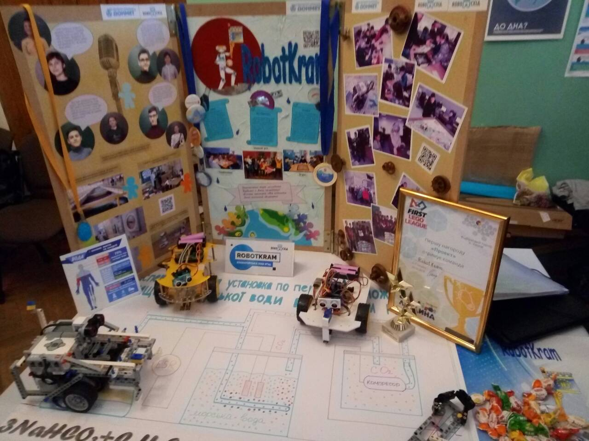

На видовищне змагання «RoboСхід» в Краматорську, яке не так давно стало щорічним, запрошуються всі, хто цікавиться роботами, технологічними роботизованими новинками і всім, що пов'язане з роботехнікою. Наша команда в попередньому році поцікавилася, а в 2018 вперше стала учасником цього фестивалю. Сам фестиваль відбувся 3 червня в Краматорському ДКіТ НКМЗ. Захід був не менш видовищним, ніж в попередні роки. Школярі та студенти з різних міст Донецької області взяли участь у фестивалі, а також порадували відвідувачів своїми вміннями у сфері робототехніки і похвалилися головними досягненнями.
Ми щастиві та гарнюні!!!
Ми щастиві та гарнюні!!!

Підтримують прагнення школярів і студентів бути "на хвилі" новітніх технологій бізнес і місцева влада. Зокрема вже другий рік організатором і головним спонсором фестивалю виступає краматорська компанія "QuartSoft Ukraine", в цьому році до них приєднався завод "Донмет", НКМЗ для цього заходу абсолютно безкоштовно надав приміщення палацу, надали підтримку заходу ДонОВГА і міський голова Андрій Панков в рамках святкування 150 -річчя міста.
Приємний момент - нагородження, подарунки чудові!!!
Приємний момент - нагородження, подарунки чудові!!!
Тренери гуртка ЗОШ 25 Гончарова М.І. та Гончаров В.І. запрошують всіх бажаючих дітей до гуртка, збирають їх разом в класі інформатики, де знаходяться комплекти лего та стіл з полем сезону. Протягом трьох місяців діти працюють над конструкцією робота, над міссіями які він виконує за програмою. Тренери навчають дітей основам программування в середовище Mindshtorms. Комусь цікавий сам процес конструювання, хтось більш виявляє здатність до програмування. І потім найактивніші потрапляють в складі команди на фестиваль року. Наші школярі беруть участь у проекті FLL і фестивалі "РобоСхід" завдяки спонсорській допомозі компанії «Quartsoft» та "ДОНМЕТ", які подарували школі набори для конструювання роботів.
Крім просто демонстрації різних роботів учасники на презентації розказали, які важливі проблеми суспільства можна вирішити за допомогою роботів.
Глядачі також змогли абсолютно безкоштовно побувати на справжньому майстер-класі з конструювання і програмування роботів від Харківської школи "Винахідник".
Треба розігріти м'язи нашого Ардуїши!!!
Крім просто демонстрації різних роботів учасники на презентації розказали, які важливі проблеми суспільства можна вирішити за допомогою роботів.
Глядачі також змогли абсолютно безкоштовно побувати на справжньому майстер-класі з конструювання і програмування роботів від Харківської школи "Винахідник".
Треба розігріти м'язи нашого Ардуїши!!!

Одним з напрямків занять з учнями в гуртку є відкрита платформа Arduino, яка дозволяє збирати всілякі електронні пристрої, які можуть працювати як автономно, так і в зв'язці з комп'ютером.Заняття дозволяють школярам набути навичок роботи з цієї популярної у всьому світі платформою, дають можливість познайомитися з мікроконтролерами, проектуванням і програмуванням простих пристроїв, а також створити за своєю задумом унікальні гаджети, втіливши найнеймовірніші ідеї. Це для нас новий напрямок і поки що ми сконструювали автомобіль для змагань зі слалому.
Наш чудовий постер на пит-зоні та наші Ардуіши.
Наш чудовий постер на пит-зоні та наші Ардуіши.
Безумовно найяскравішим елементом фестивалю стали змагання команд-учасниць з робофутболу, кегельрінгу, слалому і робосумо.
У змаганнях з футболу беруть участь 10 команд. 1 гра - 1 тайм по 5 хвилин. При реєстрації (до відкриття фестивалю) представники команд тягнуть жереб з порядковим номером. За жеребом визначається яка команда в якій групі. Перед початком першого періоду матчу суддя кидає монетку, і команди повинні зробити свій вибір (орел чи решка) і заявити його, поки монета знаходиться в повітрі. Команда, що виграла жеребкування, може вибрати ворота.
У змаганнях з футболу беруть участь 10 команд. 1 гра - 1 тайм по 5 хвилин. При реєстрації (до відкриття фестивалю) представники команд тягнуть жереб з порядковим номером. За жеребом визначається яка команда в якій групі. Перед початком першого періоду матчу суддя кидає монетку, і команди повинні зробити свій вибір (орел чи решка) і заявити його, поки монета знаходиться в повітрі. Команда, що виграла жеребкування, може вибрати ворота.